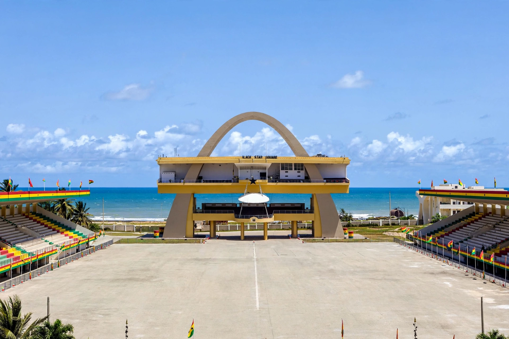

[Image placeholder: Black Star (Independence) Square and the Independence Arch, Accra]| Country | Ghana |
|---|---|
| Region | Greater Accra Region |
| Population | City about 2.5 million; metro area over 5 million (estimates) |
| Elevation | About 60 m |
| Time zone | GMT (UTC+0) |
**Accra** is the capital and largest city of Ghana, in West Africa. Located on the Gulf of Guinea coast of the Atlantic Ocean, it has been Ghana's capital since 1877, when it replaced Cape Coast under British colonial rule. The metropolitan area is home to several million people and is the country's economic and administrative centre.
Accra grew from Ga settlements and three competing European forts — British Fort James, Dutch Fort Crèvecœur (later Fort Ussher) and Danish Christiansborg Castle — whose surrounding towns, Jamestown, Usshertown and Osu, form the historic core of the modern city. Landmarks include Black Star Square, the Kwame Nkrumah Mausoleum and Makola Market.
The Ga people founded Accra in the late sixteenth century as a trading post exchanging goods with the Portuguese, then the Dutch, Danes, Swedes and British. After independence in 1957, Kwame Nkrumah made Accra a showcase of pan-African ambition, building Independence (Black Star) Square and the national theatre district.
Accra has a tropical savanna climate near the equator, with two rainy seasons and temperatures typically between 25 and 32 °C. The city has repeatedly suffered severe flooding, and rapid growth has strained drainage, housing and transport; the port suburb of Tema, connected by motorway, handles most of Ghana's maritime trade.